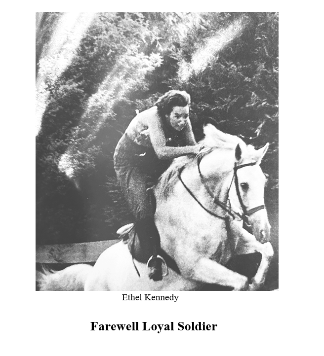

News and Analysis

News and Analysis
THE DEATH OF ETHEL KENNEDY MARKS THE END OF A DISTINGUISHED GENERATION OF THE DEMOCRATIC PARTY
The wife of Senator and 1968 presidential candidate Robert F. Kennedy died October 10, 2024
Ethel Kennedy, the last surviving member of the Kennedy generation that largely defined the former Democratic Party and shaped its free speech, anti-war, and civil rights policies after WWII, died on October 10, 2024 at age 96. She was an intimate participant in the gradual rise of the “Kennedy” Democratic Party from its heady beginnings. And she died as she watched that party come to an end--turning its back on the principles for which its most celebrated members, including her husband, Senator Robert F. Kennedy, gave their lives.
Robert F. Kennedy Jr., one of the famous couple’s 11 children declared when he withdrew from the 2024 presidential race just weeks before his mother died that the Neo-Democratic Party would be “unrecognizable” to his father, Robert F. Kennedy, and his uncle, President John F. Kennedy. He also warned that the Neo-Democratic Party was now “the greatest threat to democracy in the country” --practicing censorship, “the first step onto the slippery slope of totalitarianism,” exercising “media control of elections,” and embracing the military-industrial complex lust for war that President Dwight D. Eisenhower denounced when he left office in 1959 and President Kennedy firmly resisted after he took office in 1960.
Mrs. Kennedy supported Kennedy causes throughout her life commencing in 1946 when she soldiered door-to-door at the age of 18 for a Kennedy seat in the House of Representatives –President John F. Kennedy’s first bid for public office. She married John F. Kennedy’s brother, Robert F. Kennedy, on June 17, 1950. Ethel Kennedy told Tom Brokaw in 1988 that she was “not only in love with Robert Kennedy—she was in awe of him.” The union proved to be a marriage not only to a man, but to a family and the “Kennedy” Democratic Party that the family patriarch, Joseph P. Kennedy, was determined to build.
When Congressman Kennedy was ready to advance from the House of Representatives to the United States Senate in 1952, Mrs. Kennedy quickly demonstrated the three-dimensionality of her devotion to her new husband. In the competitive spirit that she ultimately made legendary, Mrs. Kennedy helped to organize and host tea parties across the entire state of Massachusetts in support of her brother-in-law’s Senate campaign against the formidable Republican incumbent, Henry Cabot Lodge. Lodge made the tea parties famous when he declared after his loss to Kennedy that he had been “drowned in 75,000 cups of tea.” Then in 1959 Mrs. Kennedy enthusiastically united with other Kennedy family members in an effort to finally elect John F. Kennedy the first Catholic and youngest president of the United States.
Ethel Kennedy had helped in a very personal way to create a new populist “Kennedy” Democratic Party, and it was boldly on the rise in the early 1960’s --one of the most exciting yet volatile periods in American history. President Kennedy wanted a man whom he could trust close to him so he appointed Robert F. Kennedy U.S. Attorney General. Accordingly, Robert and Ethel Kennedy dutifully settled in Mclean, Virginia to establish “Hickory Hill” --a Kennedy dynasty support center as much as a home for their growing family. Then Massachusetts elected Edward M. Kennedy, the youngest of the three Kennedy brothers, to the United States Senate in 1962. Vice-President Lyndon B. Johnson –a figure critical to President Kennedy’s election, but a man with his own presidential ambitions, privately bristled as he watched the “Kennedy” Democratic Party capture the nation’s imagination.
Kennedy was just 43 years old when he took the oath of office. He asked the entrenched CIA director Allen Dulles to continue serving in his administration. In doing so, he failed to calculate Dulles’s determination to manipulate the young president in a reckless effort to run the nation’s increasingly militant foreign policy himself with impunity. Dulles had, after all, essentially run foreign policy throughout the previous Eisenhower administration with his brother, Secretary of State, John Foster Dulles.
But Ethel Kennedy, always a careful observer of politics from a unique vantage point after her union with the Kennedy family, had in fact made her own more skeptical assessment of Dulles --derived in part from conversations with President Kennedy’s father, Joseph P. Kennedy, who knew Dulles and did not trust him. She told her children that Dulles “made no distinction between what was good for our country and what was good for oil companies and other corporations.” Dulles would prove her right.
President Kennedy nevertheless rose to resist intense pressure from Dulles to continue clandestine operations to depose or assassinate democratically elected foreign leaders unfriendly to American business, invade Cuba with American troops after the CIA-backed Cuban exile attack at the Bay of Pigs failed, commit large scale combat troops to Vietnam, and strike a belligerent stance with the Soviet Union.
For Dulles’s part, he had failed to calculate the new president’s deep devotion to peace and democracy, the strength of his principled mind, his steely resolve, and least of all his nearly arrogant courage – a dangerous species of courage that sprang not from conceit, but from privilege, education, a Catholic upbringing, his father’s extraordinary tutelage, and youth. After President Kennedy realized that Dulles had misled him into a trap at the Bay of Pigs, which Dulles had intended to trigger a full scale war against Cuba, Kennedy declared that he wanted to “splinter the CIA into a thousand pieces and scatter it to the wind,” according to Special White House Assistant and historian, Arthur M. Schlesinger, Jr.
On November 29, 1961, Kennedy demanded the resignations of the CIA’s top leadership: Director Allen Dulles, Deputy Director Richard Bissell Jr., and Deputy Director Charles Cabell.
Just two-years later, President Kennedy was dead. He was assassinated on November 22, 1963, in Dallas, Texas—where former CIA Deputy Director Charles Cabell’s brother (Earl Cabell) was mayor and ran the police department. Vice-President Lyndon Johnson, formerly United States Senator from Texas, ascended to the presidency and immediately appointed Dulles to lead the now discredited Warren Commission investigation of the assassination. There is a note of at least dark cynicism in Johnson’s tape recorded telephone call to Dulles, and in the date itself of the call (November 29, 1963), in which Johnson informed Dulles of his selection to investigate the murder of “our beloved friend” who had in fact fired Dulles on that very day two years earlier. On all accounts President Kennedy was not beloved to either man. He was their nemesis.
Ethel Kennedy eventually added a frank assessment of Lyndon Johnson as well to her perceptions of Allen Dulles. On her analysis, Johnson was indeed “cynical” --“vulgar and self-interested,” too, she told her children.
Beyond all doubt John F. Kennedy’s murder changed the lives of every member of the Kennedy family forever --and according to close family friend, Lem Billings, “Ethel was more Kennedy than the Kennedys.” But the murder devastated Robert Kennedy. According to Robert F. Kennedy, Jr., his father in deep anguish after the murder wore President Kennedy’s flight jacket, carried his PT-109 tie clip, and kept a lock of his hair in a jade frame in his dressing room. He even began to question the basic assumptions of his world view that good can defeat evil and that all human affairs occur on a trajectory towards divine justice –a near collapse of faith in any moral order surely fueled by his irrepressible suspicion that agents of the very government that he had been taught to revere were responsible for the murder of their own president.
Ethel Kennedy understood the great depth of her husband’s despair, and she threw her heart and energy into bringing about his recovery. She gradually urged him to re-engage in public events. And when Mr. Kennedy was eventually ready in 1964 to pursue a seat in the United States Senate from New York, Mrs. Kennedy commandeered her maiden family’s DC-9 to transport her and the Kennedy children from Cape Cod to New York to cheer the New York State Democratic Party Convention into nominating Robert F. Kennedy for United States Senator. Kennedy defeated the Republican candidate, Kenneth Keating, by 700,000 votes.
Lyndon Johnson won the 1964 presidential election against the Republican candidate, Barry Goldwater, by a landslide. Johnson did so by promising to continue President Kennedy’s policy of limited involvement in Vietnam. The policy consisted in providing advice and support to South Vietnam, but not American troops. (Recent research suggests that Kennedy himself probably would have withdrawn entirely from Vietnam had he lived and been elected to a second term). Goldwater had called for escalation of the Vietnam War, and he suggested that it might even be appropriate to use nuclear weapons in the conflict --a position ironically similar to today’s Neo-Democratic Party’s approach to the Ukraine War. Johnson warned that such an approach would create a risk of nuclear war, and he drove that point home with a chilling television advertisement: the famous “Daisy Girl” 30 second spot.
But in 1965 President Johnson suddenly escalated America’s involvement in the Vietnam War --committing American troops to the conflict (75,000 in June, 100,000 in July, and allocating another 100,000 for 1996) and ordering savage bombing campaigns. When this and other efforts failed to end the war, Senator Robert Kennedy met privately with Johnson to urge him to declare a cease fire and enter into peace negotiations with Ho Chi Minh. Johnson refused.
Congressman Allard Lowenstein (D-NY) vehemently opposed Johnson’s dramatic escalation of the war and organized what became known as the “Dump Johnson Movement.” He solicited Robert Kennedy to challenge Johnson for the 1968 Democratic nomination for president. Kennedy struggled with his conscience. He hated the war. But he doubted that he could defeat Johnson for the Democratic nomination. What’s more, he feared party retribution if he should only manage to split the party and in essence elect Richard Nixon, the expected Republican nominee. Most of Kennedy’s closest advisors strongly opposed the challenge. And even his brother Senator Edward Kennedy was adamantly against it, too.
Not so Ethel Kennedy. Instead, she made sure that her husband would accept the challenge by giving his conscience no retreat. At propitious moments she would seize from her purse a copy of a powerful appeal written by Jack Newfield for the Village Voice. And she would produce it, not so much for the senator’s mind, which she knew well enough, but for his heart, which she knew even better:
“If Kennedy does not run in 1968 the best side of his character will die. He will kill it every time he butchers his conscience and makes a speech for Johnson next autumn. It will die every time some kid asks him if he is so much against the Vietnam War, how come he is putting party above principle? It will die every time a stranger quotes his own words back to him on the value of courage.”
Senator Kennedy rose to the challenge, but another Kennedy assassin brought him down four months before the Democratic Convention. He was murdered on June 5, 1968 in Los Angeles while he was celebrating a victory in the 1968 California Democratic Presidential Primary. Ethel Kennedy was, characteristically, standing by her husband’s side in a moment of great triumph just moments before he was struck by a fatal bullet in a violent moment of ugly defeat.
To be sure, Ethel Kennedy’s life was marked throughout with triumph and tragedy.
She participated in the rise of an exciting Democratic Party with revolutionary promise in 1960, and she must have stood proud and ready when she heard President Kennedy declare in his inaugural address that “the torch had passed to a new generation of Americans” –glad in her heart because she knew that she had helped to ignite that torch. But she also lived to see the radiant light from the torch grow dark in the hands of a Neo-Democratic Party. She saw a party of war and censorship rise from the ashes of a party of peace and free speech --the “Kennedy” Democratic Party for which she had fought so loyally at Robert F. Kennedy’s side since the day that they were married in 1950.
Ethel Kennedy was born on April 11, 1928. At age 27 she lost both of her parents, George and Ann Skakel, when in route to Los Angeles in a converted Air Force B-26 bomber both of the aircraft’s engines exploded, and her parents died in the fiery crash. George Shakel, Jr., Mrs. Kennedy’s brother, also died in a private plane crash in 1966.
Robert and Ethel Kennedy’s son, David Kennedy, died of a drug overdose at age 28. When David (especially close to his father) was 12 years old he had remained alone in the Kennedy’s room at the Los Angeles Ambassador Hotel when his father left the room to deliver his primary victory speech. David was later discovered with tears streaming down his swollen face fixed on a television screen as image after image of his father’s assassination flashed before him.
Their son Michael Kennedy died in a New Years Eve skiing accident in 1997 after he struck a tree on a steep and notoriously dangerous slope at Aspen when he was 39 years old
Arthur Schlesinger said that Ethel Kennedy’s romance with Robert Kennedy was one of the great love stories of all time. Her tremendous love for her husband surely intensified the suffering that she felt when he died. She was only 40 years old and pregnant with her 11th child, Rory Kennedy, when the great love of her life was shot to death as she stood only a few feet away.
But her terrible suffering also intensified her extraordinary love. In death Robert and Ethel Kennedy did not part. Ethel Kennedy vowed never to marry again –and she never did.
Instead, she devoted the rest of her challenging life to perpetuating Senator Robert F. Kennedy’s legacy and engaging herself more personally and even boldly in battles for civil rights –“sorrowful but always rejoicing” and finding monumental strength in her Catholic faith.
The Catholic mystic Meister Eckhart insisted centuries ago that suffering is the swiftest steed to perfection and eternal life.
Such are the The Real Times on October 11, 2024